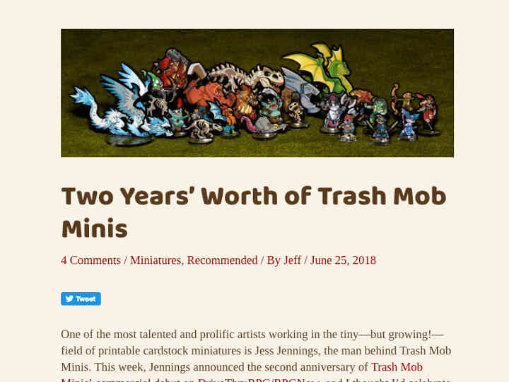
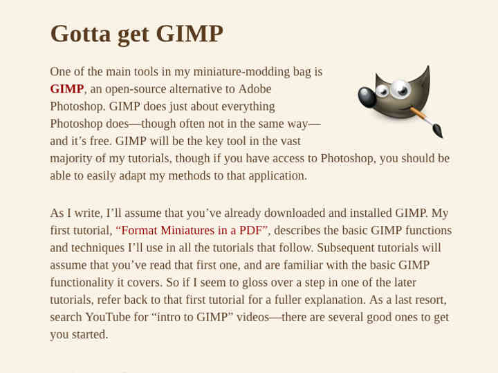

Print and Play Gamer Blog
Recently, Jeff has begun to build Print and Play Gamer, a hobby blog covering the downloadable, printable side of the tabletop roleplaying and wargaming hobby.
Features

The blog has carried feature articles and reviews of RPG games, including Dungeon World, Dungeon Crawl Classics and Beyond the Wall, and OSR 'zines such as Wormskin and Black Pudding. It's also examined printable miniatures lines, like Trash Mob Minis and Dave Graffam Games, as well as battle reports for wargames like Advanced Song of Blades and Heroes.
Tutorials

The PnPG blog also features maker tutorials, showing users how Jeff creates the printable miniatures and terrain he enjoys. Current tutorials focus on using GIMP to modify existing cardstock miniatures and format them in PDFs for convenient distribution and printing. Upcoming how-tos will demonstrate Jeff's methods for creating new miniatures from found images, as well as his assembly techniques for getting minis and terrain printed and assembled for play.
Resources

Jeff also reveals his favorite resources for papercraft gamers, including software and online miniature and game archives. Since print-and-play gamers tend to be cost-conscious DIYers, the blog emphasizes free tools and repositories. He also brings special offers and bundles on great products to gamers' attention.
Downloadable content

The PnPG blog also includes an always-expanding of free, downloadable miniatures, terrain, and gaming accessories. Many of these are Jeff's original creations, but some were created by other talented artists and formatted by Jeff for easy, attractive printing. This curated collection of excellent minis is a great place for gamers new to printable miniatures to begin their print-and-play hobby.